O Guia Prático de Primeiros Socorros para Cães e Gatos mostra, passo a passo, o que fazer em engasgo, intoxicação, convulsão, golpe de calor e mais de 50 situações, para você agir certo e ganhar tempo até o pronto atendimento veterinário.
Ele achou o chocolate amargo que ficou em cima da mesa.Você faz ele vomitar ou não?
Voltou do passeio ofegando, deitou e não quer levantar.Molha com água gelada ou corre para a clínica?
O gato está há 10 minutos na caixa de areia, fazendo força, e não sai nada.É prisão de ventre ou é emergência?
Ele caiu de lado, começou a pedalar e a babar.Você coloca a mão na boca para ele não engolir a língua?
A internet vai te dar dez respostas. Algumas delas pioram a situação.
6 situações reais. Escolha o que você faria. A resposta certa aparece na hora.
As respostas seguem as diretrizes RECOVER 2026 de primeiros socorros para cães e gatos e a literatura veterinária atual.
"Comeu algo estranho? Dá carvão ativado."É a "solução" caseira mais compartilhada hoje. Só que o carvão ativado não é antídoto para qualquer coisa, e na maioria das vezes, em casa, ele não faz o que promete.
xilitol, álcool, fluido de radiador, ferro, chumbo, sal, produtos cáusticos e derivados de petróleo.
é o que um cão de 10 kg precisaria. O veterinário usa de 1 a 5 gramas por quilo. A dose caseira quase nunca chega perto.
se o animal estiver sonolento, engasgar ou vomitar. Em filhotes, também pode desregular o sódio do sangue.
A falsa sensação de "já fiz alguma coisa" segura o tutor em casa no tempo em que o tratamento faria diferença.
O mesmo vale para leite, azeite e outras receitas caseiras. O guia mostra o que fazer de verdade em cada intoxicação, e o que nunca fazer.
dos casos de golpe de calor em cães aconteceram durante passeio ou brincadeira. Só 5% foram em carro fechado.
dias é quanto o raticida pode levar para dar sinais. Quem espera o sintoma perde o tempo do antídoto.
comprimido de paracetamol pode matar um gato. Remédio de gente não tem dose caseira segura para pets.
recomendações nas novas diretrizes de primeiros socorros, de 2026. O guia segue todas que se aplicam ao tutor.
Fontes: Hall, Carter e O'Neill, Animals, 2020 (dados de cães atendidos no Reino Unido); RECOVER First Aid Guidelines, 2026; literatura de toxicologia veterinária.
O semáforo do guia separa o que é para correr agora, o que é para o mesmo dia e o que dá para observar.
Respiração difícil, gengiva roxa ou branca, convulsão por mais de 5 minutos, tóxico ingerido, barriga inchando com ânsia sem vomitar, gato sem conseguir fazer xixi.
Vômito ou diarreia repetidos, mancando sem apoiar a pata, ferida por mordida, uma convulsão com recuperação completa.
Um vômito isolado com o pet bem, espirro reverso que passa sozinho, coceira sem ferida.
Contatos, maleta de primeiros socorros e os sinais vitais normais do seu pet.
Segurança, focinheira improvisada, contenção de gatos e transporte sem piorar.
Onde colocar as mãos em cada formato de peito, ritmo, sopros e quando parar.
Manobra de desengasgo em cães e gatos, consciente e desmaiado. Linhas, ossos, baterias e ímãs.
Braquicefálicos em crise, colapso de traqueia, afogamento, choque elétrico e fumaça.
Como resfriar do jeito certo, quando parar, patas queimadas no asfalto e hipotermia.
Alimentos, remédios humanos, antipulgas no animal errado, venenos, plantas e sapo-cururu.
Cobra, escorpião, aranha, lagarta, abelha e anafilaxia.
Durante e depois da crise, hipoglicemia, hérnia de disco e o gato que arrasta as patas.
Pressão, torniquete, mordidas, objeto cravado e lesões nos olhos.
Atropelamento, gato que caiu da janela, fraturas e choque.
Torção gástrica, obstrução urinária, parvovirose, parto complicado e piometra.
Checklist de 15 minutos para deixar a casa pronta.
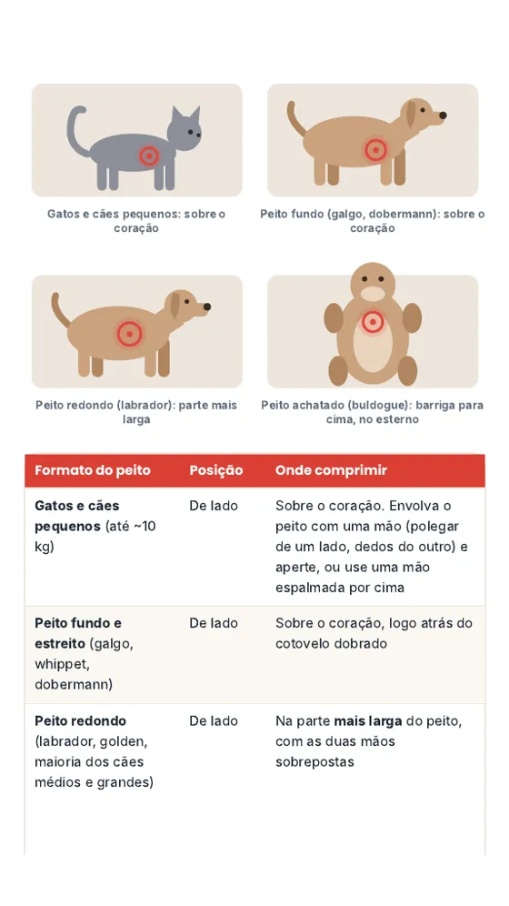
Onde colocar as mãos na RCP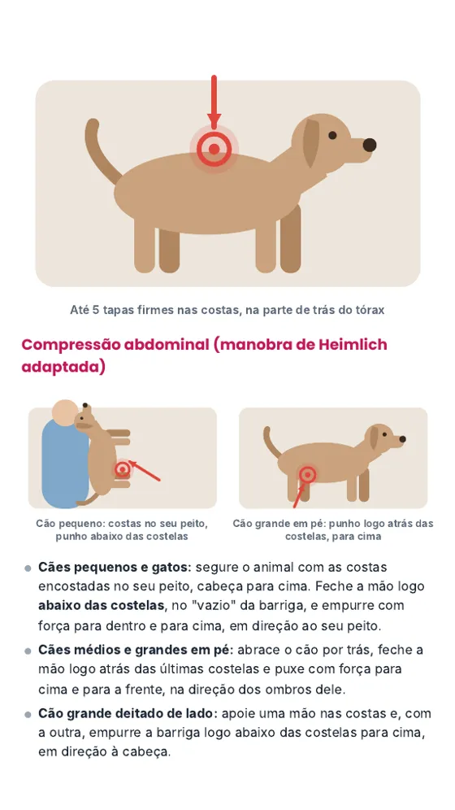
Manobra de desengasgo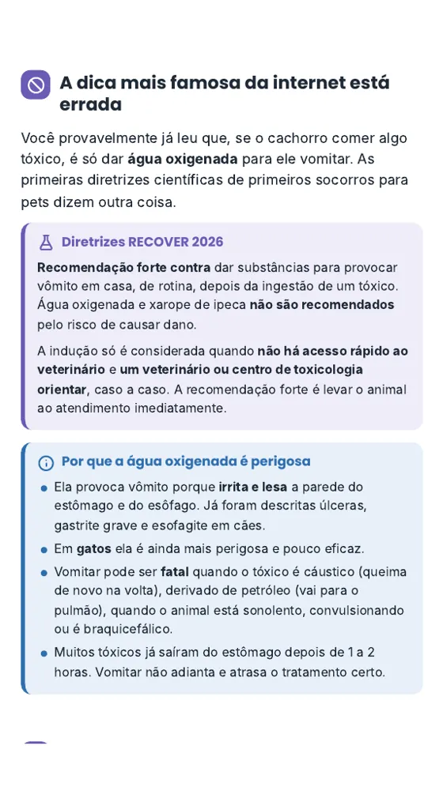
Intoxicação: o que não fazer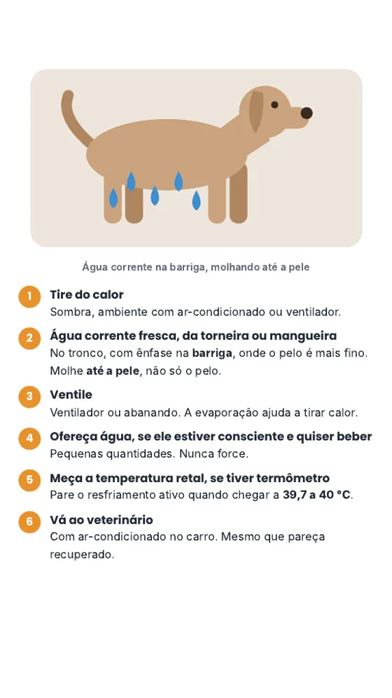
Golpe de calor, passo a passo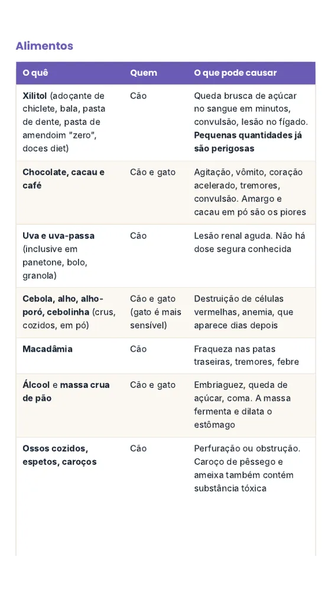
Alimentos tóxicos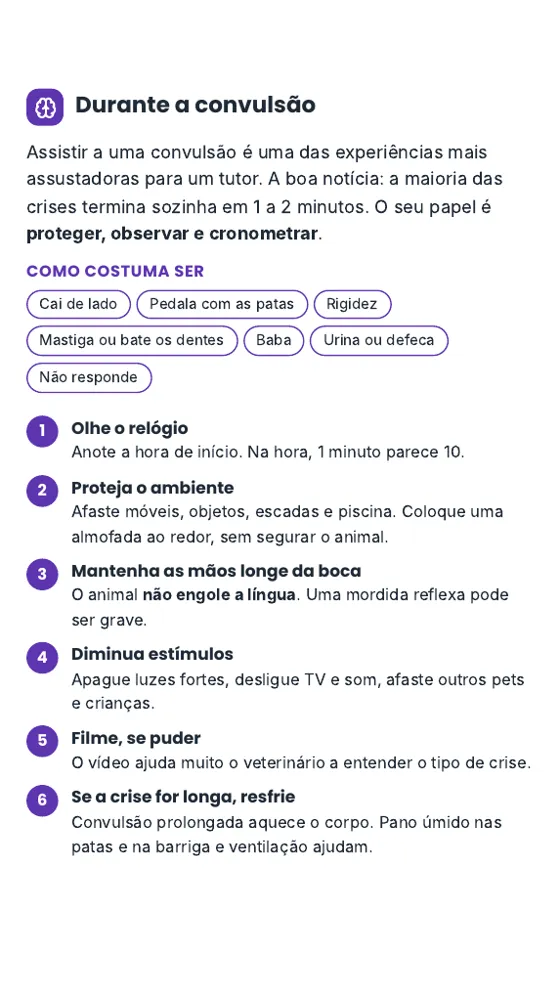
Durante a convulsão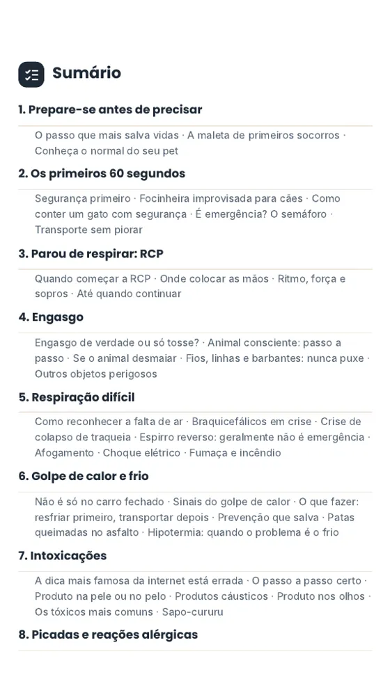
Sumário clicávelDeslize para ver mais páginas →
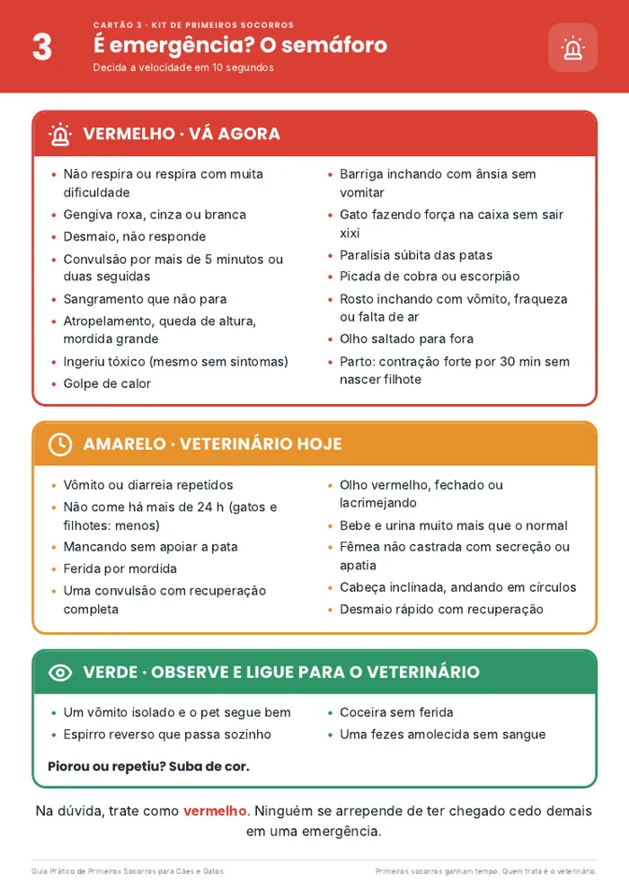
Cartão 3 · Semáforo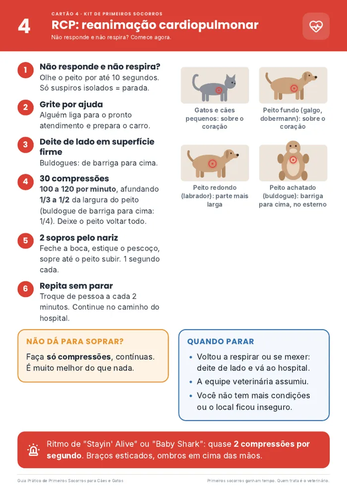
Cartão 4 · RCP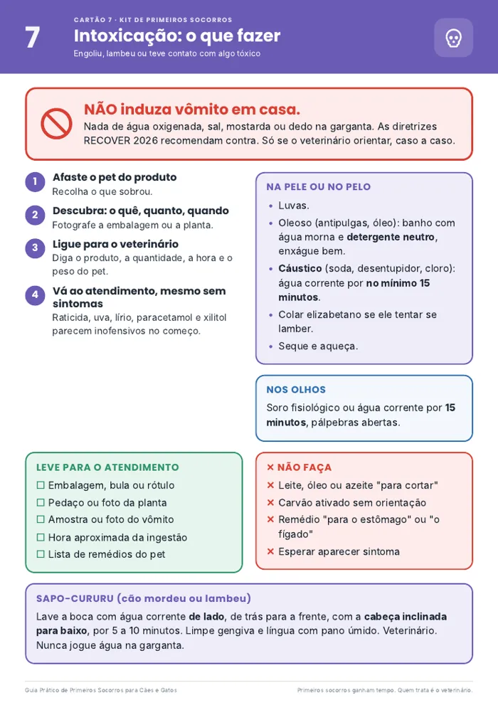
Cartão 7 · Intoxicação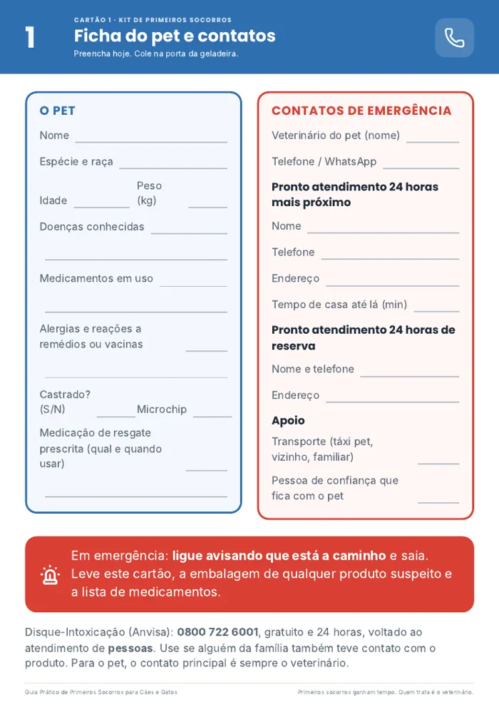
Cartão 1 · Ficha e contatosCole na geladeira, na maleta e no porta-luvas do carro. Na hora do susto, a resposta está na sua frente.
Pagamento único. Acesso para sempre.
Garantia incondicional. Leia, imprima os cartões e, se não fizer sentido para você, peça o reembolso pela Kiwify em até 7 dias. Sem perguntas.
Não. Primeiros socorros servem para ganhar tempo até o pronto atendimento. Em todas as situações, o guia mostra o que fazer nos primeiros minutos e quando correr para o veterinário. Diagnóstico e tratamento continuam sendo do veterinário.
Serve. O guia mostra o que muda entre cães e gatos em cada emergência: técnica de RCP por formato de peito, tóxicos que só afetam gatos (como lírio, permetrina e minoxidil), contenção com toalha e as emergências típicas de cada espécie.
Não. O texto é escrito em linguagem de tutor, com passo a passo numerado, ilustrações e caixas de "faça" e "não faça". Dá para ler em uma noite e os cartões resumem o essencial.
Não, de propósito. Dar remédio por conta própria em emergência é uma das causas mais comuns de piora. O guia ensina o que nunca dar e quando ligar para o veterinário. Se o seu pet tem uma medicação de resgate prescrita, o guia explica como deixar isso organizado.
O pagamento é processado pela Kiwify. Assim que for confirmado, você recebe por e-mail o guia em PDF para o celular e o kit de cartões para imprimir.
Serve. O conteúdo vale para todos, e a ficha do pet pode ser impressa quantas vezes você precisar.
Sim. O guia segue as diretrizes RECOVER de primeiros socorros para cães e gatos, publicadas em agosto de 2026, e as diretrizes RECOVER de RCP de 2024. Onde as diretrizes não chegam, segue a literatura veterinária atual. As referências estão no fim do guia.
Você tem 7 dias de garantia. Peça o reembolso direto pela Kiwify, sem precisar explicar o motivo.
Ler o guia leva uma noite. Imprimir os cartões, 5 minutos. A diferença aparece no dia em que você mais precisar.
Quero estar preparado